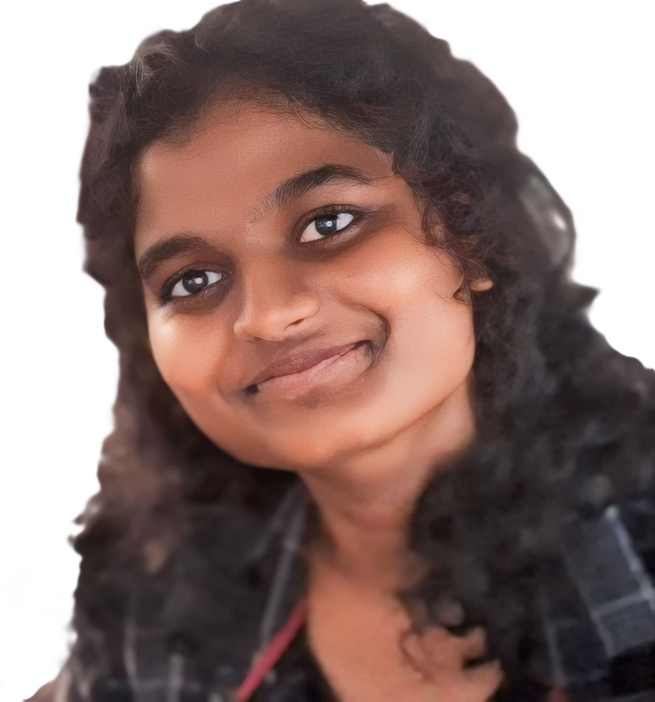
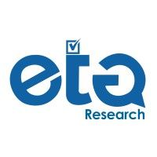
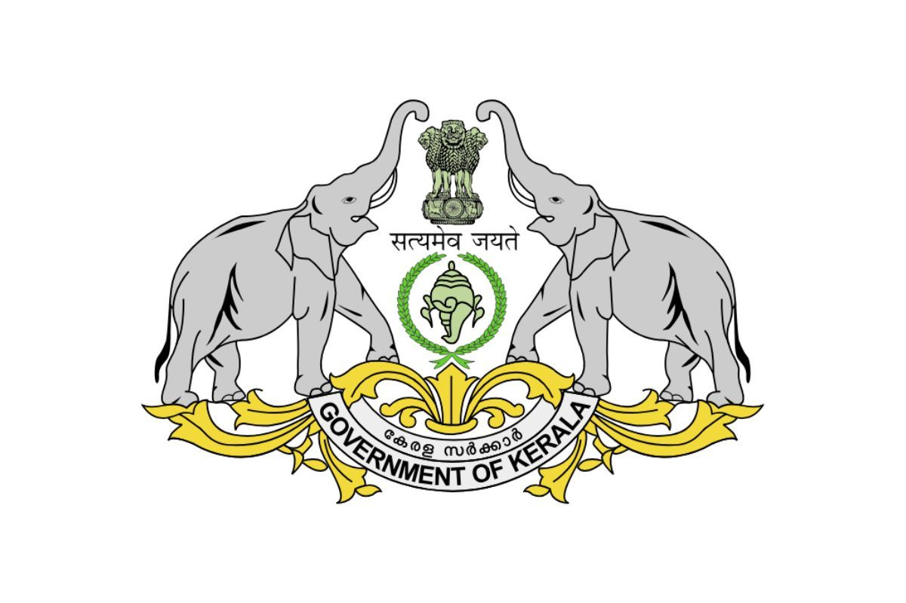

PORTFOLIO
“An economist-in-the-making who sees numbers not just as data points but as stories of people, power, and possibility. I aim to blend research, creativity, and policy thinking to design impactful solutions—one local insight at a time.”

“An economist-in-the-making who sees numbers not just as data points but as stories of people, power, and possibility. I aim to blend research, creativity, and policy thinking to design impactful solutions—one local insight at a time.”
Growing up, I always questioned why inequality persisted even when policies existed. That curiosity grew into a deeper drive to understand the economic structures that shape our lives. Today, as a postgraduate student in Economics, my journey has been anything but conventional. I believe research should never stay locked in academic journals—it should breathe, speak, and move people. That belief has led me to projects like EconMosaic, where I translated complex economic ideas into engaging student-led content, and Theotro, where my storytelling skills as a scriptwriter allowed me to explore themes of justice and voice. Whether it's writing a policy memo or scripting a street play, I bring the same energy: to humanize economics and make change tangible. I am passionate about fieldwork, behavioral insights, and local governance—and I'm always seeking ways to merge creativity with policy to create a more inclusive future.

📍 Ambattur, Chennai
✉️carolshekinah08@gmail.com
📞 8248359037

Tamil Nadu Election 2026 (April)
➮ Monitored Tamil-language media daily and translated breaking political news, protest incidents, and governance issues into structured English reports for a non-Tamil-speaking research team.
➮ Covered 7+ AIADMK campaign rallies across Chennai constituencies, producing detailed speech reports on policy attacks, welfare promises, and electoral strategy.
➮ Tracked voter sentiment across 10+ community segments (students, minorities, Dalits, women, etc.) to map which parties were targeting which groups and why.
View Works →Feb 2026
➮ Curated 20 viral social media posts (100K+ views on X, 1K+ upvotes on Reddit) tailored to two distinct founder personas — demonstrating platform literacy and content intuition.
➮ Analysed engagement patterns and mapped content to audience worldviews; delivered a structured research report with persona-aligned commentary on content strategy.
View Project →

July 2025 – Aug 2025
➮ Cleaned and analyzed large-scale datasets using R, Python, and SQL to extract fiscal insights
➮ Engaged in policy dialogues on the Million Pillar Economy, and critically examined the 17th Finance Commission and 7th Kerala SFC reports
➮ Conducted Independent research on “Unlocking New Revenue Streams in Chennai”
View Certificate → View Report →M. S. Swaminathan Research Foundation (MSSRF), Chennai
May 2025 – June 2025
➮ Conducted impact assessment of MGNREGA-NRM in Andhra Pradesh using MIS data (2018–25) on works, funds, and participation
➮ Reviewed 50+ academic and institutional sources to design a comprehensive evaluation framework tailored to ecological and livelihood outcomes
➮ Collaborated with senior researchers to structure a data analysis framework, enhancing understanding of fiscal and ecological linkages in rural development projects
View Certificate →View Report → To Let Globle - Rental Company
To Let Globle - Rental Company
Dec 2024 - Feb 2025
➮ Conducted market research on 500+ listings to analyze rental trends and pricing patterns.
➮ Developed competitor analysis reports, identifying 3 key business opportunities for growth.
➮ Presented insights to stakeholders, improving strategy efficiency by 20%.
View LOR →Oct 2024 - Dec 2024
➮ Conducted AI-driven research and developed models for data analysis.
➮ Presented insights on ML trends and automation impact in financial markets.
➮ Evaluated the business impact of AI-based credit scoring tools by comparing traditional underwriting processes, estimating potential 20–25% cost reduction in loan processing.
View Certificate →Oct 2023 - Nov 2023
➮ Learned Sales and Marketing strategies while working as a Campus Ambassador.
➮ Developed partnerships and increased engagement in the academic sector.
View LOR →Oct 2023 - Dec 2023
➮ Worked with like-minded individuals to create high-quality content.
➮ Gained experience in writing, research, and audience engagement.
Aug 2024 - Sep 2024
➮ Conducted rigorous testing and evaluation of AI outputs, contributing to the development of more reliable and context-aware models.
➮ Improved model accuracy and reduced hallucinations by 90%
March 2025
➮ Led 16+ interactive sessions on stock market trading and Moot Court, engaging 50+ students/session, resolving doubts and technical issues.
➮ Organized game nights to foster interactive, collaborative learning.Tracked student progress through check-ins, boosting course completion rates by 75%.
University of Madras, Chennai
Masters of Economics
Ethiraj College For Women, Chennai
Bachelors of Economics

Editing

Content Writing

Skipping

Reading Books
English
Fluent
Malayalam
Intermediate
Tamil
Native
Econmosaic Club
Founding contributor to EconMosaic, a student-led economics club aimed at promoting creative research communication. Curated interactive content, led discussions, and helped launch peer-reviewed newsletters in Madras University Library connecting real-world issues with academic economics.
Theatro Club-Scriptwriter
Scriptwriter for Theotro, the college’s drama club, where I explored social themes through short plays and performances. Focused on storytelling that bridged art and advocacy, using theatre as a medium to raise questions about society and policy.
| S. No | Research Topic | Presented At | Description | Media |
|---|---|---|---|---|
| 1 | The New Energy Cold War – China's Green Dominance and the Collapse of Western Energy Vision | DIYA'26 – University of Madras Dept. of Defence & Strategic Studies 20 February 2026 |
Argued that the green transition hasn't ended geopolitics—it's relocated it from oil wells to lithium mines. Mapped China's control of 80% of solar panels and 60%+ of rare earth processing, Europe's policy collapse post-2012 austerity, and how the AI data centre boom is accelerating renewables regardless of political will. Identified India's rare earth reserves and ISA leadership as a strategic opening to challenge Chinese supply-chain dominance. | View Presentation → |
| 2 | Kosasthaliyar River & Puzhal Lake – Chennai's Water Security Crisis | Chennai Lakes Datajam – OpenCity IIT-M Research Park · 27 September 2025 |
On-the-spot data analysis at OpenCity's Lakes Datajam. Traced Puzhal Lake's dual water sources, documented its monsoon-driven boom-bust storage cycles, and evaluated CMWSSB's ₹503 crore upgrade plan to lift supply from 240 to 310 MLD. Concluded that long-term water security needs catchment restoration and diversified sources—not just infrastructure. Work featured in OpenCity's official datajam report. | View Presentation → OpenCity Feature → |
| 3 | Loan Default Prediction (Logistic Regression Project) | C2C - Data Analysis Workshop June 2025 |
Developed a machine learning model to predict the likelihood of loan default. Steps:Conducted data exploration, cleaning, preprocessing, and feature engineering. Technique: Applied Logistic Regression with threshold tuning to improve predictions. Checks: Validated model using accuracy, precision, recall, confusion matrix, and ROC-AUC. Result: Delivered a reliable, high-recall predictive model. | The Project → |
| 4 | Budget Analysis 2025 – Prices and Inflation | Cochin University 25 February 2025 |
Dissected India's Union Budget 2025 through an inflation lens—evaluating subsidy effectiveness, price control mechanisms, and whether the government's strategy meaningfully reaches household purchasing power. Applied behavioural economics tools to assess what drives inflation beyond supply-demand models. | View Presentation → View Certificate → |
| 5 | UK Plastic Packaging Tax – Impact and India's Policy Adaptation | Madras Christian College 30 January 2025 |
Assessed the real-world impact of the UK's 2022 Plastic Packaging Tax on producer behaviour and recycling rates. Derived lessons for an Indian equivalent—factoring in informal recycling networks, consumer behavioural inertia, and the structural gaps that make a direct copy-paste approach inadequate. | View Presentation → View Paper → View Certificate → |
| 6 | Evaluating a Mother's Contribution to GDP | Cochin University 29 January 2025 |
Challenged the invisibility of unpaid care work in national accounting. Applied shadow pricing to estimate the market value of domestic labour, critiqued GDP's structural gender bias, and proposed inclusive accounting frameworks—arguing that what we don't measure, we don't protect. | View Presentation → View Certificate → |
| 7 | Career Compass – A Career Guidance Platform | Sustainovate – Stella Maris College (SMSD) 11 January 2025 |
Responded to a striking reality: Indian students are aware of only 7 out of 250+ career options. Career Compass is a web platform offering career roadmaps, skill pathways, and internship resources—partnered with NGOs like Teach for India and Pratham to reach underserved schools. Integrates AI for real-time personalised career recommendations. | View Presentation → View Certificate → |
| 8 | Plastic Reduction in Campus – Ecocred App | IIT Madras – Shaastra'25 (Synergy) 7 January 2025 |
Designed a behavioural intervention to eliminate single-use plastic on campus. The Ecocred app uses QR-based tracking, a reward-and-penalty system, and gamification to nudge sustainable choices—demonstrating how behavioural economics can drive environmental outcomes at an institutional scale. | View Presentation → View Certificate → |
| 9 | Foreign Trade of Vulnerable African Economies – A GPRI Analysis | IIT Madras – Shaastra'25 (Ecomatrix) 21 December 2024 |
Used the Geopolitical Risk Index (GPRI) and panel data to show how rising global tensions disproportionately hit African trade volumes and debt sustainability. Found that geopolitical shocks—not just domestic governance—drive trade vulnerability, calling for systemic policy reform. | View Paper → View Certificate → |
| 10 | Cash Transfers for Urban Poverty – A Case Study of Dharavi | Loyola College 9 October 2024 |
Made the case for unconditional cash transfers (UCTs) as a more dignified and efficient poverty intervention in urban informal settlements. Used Dharavi as a lens to compare in-kind welfare with direct transfers, drawing on behavioural advantages like autonomy, reduced leakage, and improved welfare targeting. | View Paper → |
| 11 | Coovum River – A Tamil Short Video on Urban Water Pollution | Loyola College 20 September 2024 |
Produced a Tamil-language short video documenting the Coovum river's transformation from a historic waterway to a polluted urban drain. Combined storytelling with data on wastewater management and civic neglect—making the case for sustainable river governance. | Watch Video → |
| 12 | The Political and Economic Implications of Zero Interest Rate Policy | Madras Christian College – YSC 2.0 30 August 2024 |
Compared Japan's decade-long ZIRP experiment with India's monetary context, highlighting how near-zero rates fuel asset bubbles, distort capital allocation, and create political pressure on central banks. Argued that policy tools must be context-sensitive, not universally applied. | View Presentation → View Certificate → |
| 13 | Enhancing Urban Mobility and Addressing the Challenges of Traffic Congestion in India | Ethiraj College – UG Dissertation 18 March 2024 |
Analysed why Indian cities remain gridlocked despite policy efforts. Focused on Bus Rapid Transit gaps, last-mile connectivity failures, and smart traffic systems. Grounded in primary mobility surveys and proposed a multi-modal framework to reduce urban congestion. | View Presentation → |
Thank you for taking the time to explore my portfolio.
I look forward to connecting and creating meaningful impact through my work.
✦ Open to relocating and collaborating across diverse locations and opportunities worldwide.

Ambattur, Chennai

carolshekinah08@gmail.com

8248359037
 Lending Buddha
Lending Buddha EduBenchers
EduBenchers Citizen Of Science Blog
Citizen Of Science Blog Soul AI
Soul AI